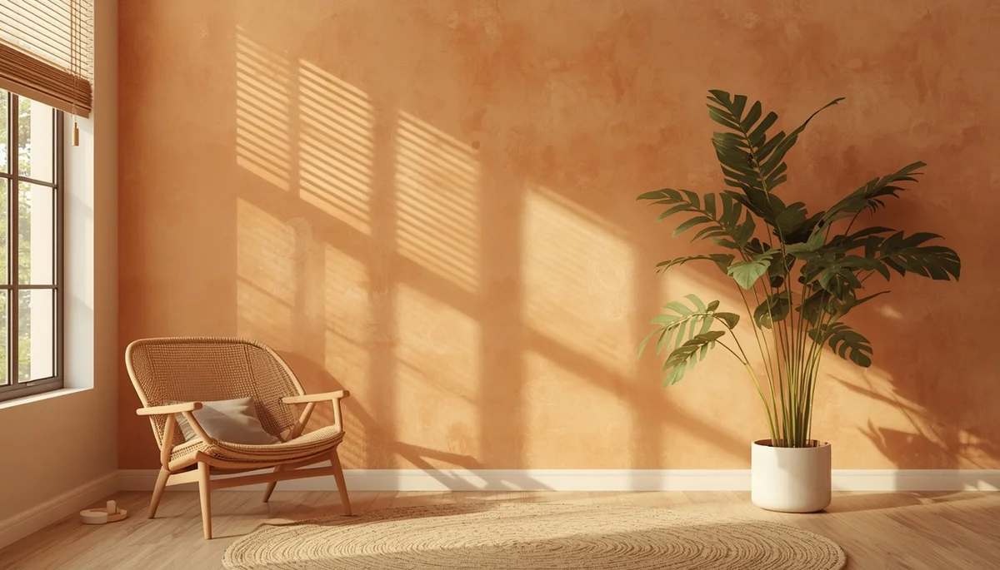

Comprender la alineación natural de la espalda
La columna vertebral de un niño o niña se encuentra en constante proceso de formación y consolidación ósea. Observar cómo se desplaza, se sienta o camina en su día a día nos brinda información muy valiosa sobre su desarrollo físico. Una postura equilibrada no se logra mediante la imposición rígida, sino facilitando un entorno que respete su necesidad innata de movimiento y descanso.
El desarrollo dinámico de la columna infantil
Durante los primeros años de crecimiento, las curvas naturales de la columna van adoptando su forma definitiva a medida que el sistema musculoesquelético madura. Comprender este proceso evolutivo nos ayuda a evitar exigencias posturales prematuras y a acompañar cada etapa con naturalidad, atendiendo a las señales de fatiga antes de que se conviertan en dolor.
La importancia de mirar sin corregir constantemente
Repetir constantemente frases como "ponte derecho" suele generar tensión y rechazo en el menor. En su lugar, observar el trasfondo de una postura encorvada —como el cansancio acumulado o un asiento inadecuado— permite actuar sobre la causa real y ofrecer soluciones ergonómicas respetuosas.
"Una espalda sana se construye permitiendo el movimiento libre y proveyendo espacios adaptados a su estatura."
Acompañar desde la ergonomía y la cercanía
Saber observar la postura global del menor nos otorga la claridad necesaria para prevenir molestias futuras, garantizando un crecimiento armónico y sin rigideces innecesarias.
➔ Volver al índice de Higiene Postural